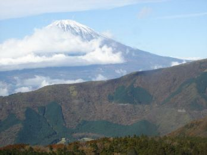
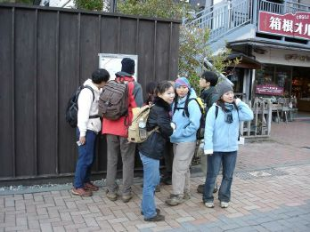
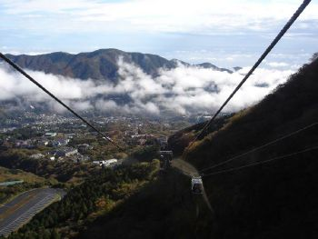
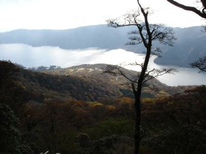
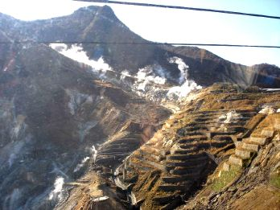
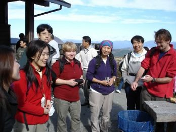
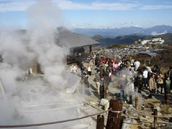

HakoneNovember 12, 2005(organized Günther Lientschnig)Photos by Tadashi and report by Ginny |
 |
|  |  |  |
|
Despite the rain, everybody turned up to the 7-11 - the organiser was the last to turn up :) but even so we could get away on time. Unfortunately, the traffic was slow in Tokyo, and we kept Chiho waiting 10 minutes or so in Hakone Yumoto. Well, we still had to wait around a bit for Elena, but Lloyd didn't turn up even though he phoned to say he was on the way. The good news was that by the time we did get started, the weather had cleared and we had some magnificent views from the ropeway of Mount Fuji and surrounding area, still with some incredibly bright autumn colours. We stopped at Owakudani for a breakfast of black eggs that had been cooked in its boiling sulphurous water. Then we had a bit of trouble finding the start of the trail to Komagatake peak. Some other walkers told us the trail was closed by landslides so we should get the bus instead. We ignored them and eventually managed find the start of the trail. It was blocked off, with a sign saying it was closed due to fallen trees - well, fallen trees aren't landslides, so we decided to have a go. We did have to climb over, under, and around a few trees, and the trail was overgrown and a bit tricky to follow in places, but it was definitely worth the effort for the great views over Lake Ashinoko. The bright sunshine sadly gave away to dense fog on the top of Komagatake, although this did eventually clear just enough to see from one side of the summit to the other. On the ropeway down, we finally got some more lovely views once we got below cloud level. We took the boat over to Hakone Sekisho, the former checkpoint on the old Tokaido highway, and then walked along the famous avenue of magnificent cedars. We managed to walk a little way down the old highway, but the stones were very slippery and it was getting too dark in amongst the trees, so we eventually climbed up onto the main road to find a bus stop. The bus was packed to overflowing, but the driver kept everyone entertained with jokes all the way back to Hakone Yumoto. We found a nice onsen with rotenburo jacuzzi and hot tubs, and then had dinner in the only place still open that had enough space for thirteen people - not to everyone's taste, but the curry rice was very nice :) Fortunately the traffic had cleared and we got back to Tsukuba in just under two hours and were home by eleven. All in all it was a highly enjoyable day - thank you very much to Gunther for organizing it and buying all the tickets and doing all the complicated calculations of expenses! Tadashi: By the way, I forgot to mention the bit about the organizer being so busy reorganizing his backpack several times that he failed to notice the rest of us getting on board the ropeway car - everyone (including the ropeway operator and a few other waiting passengers) tried to get his attention but he was oblivious. By the time he had finished with his backpack, he looked up to see us receding in the distance waving goodbye.... Of course, we waited for him to arrive (redfaced) at Owakudani station :)
|
||
|  |  |  |